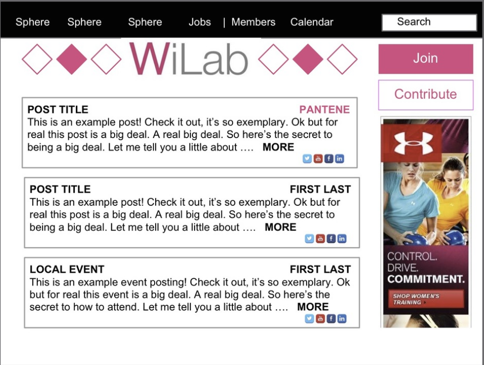
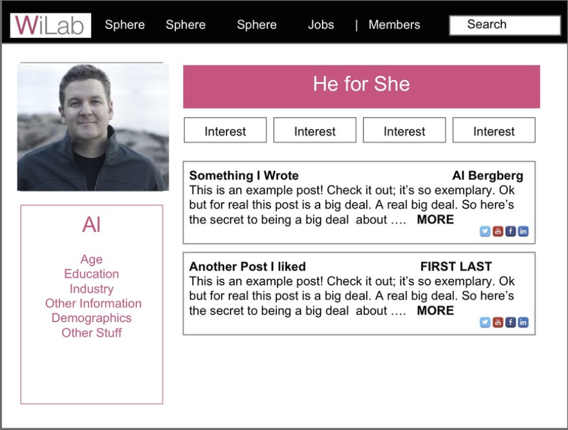
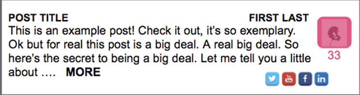
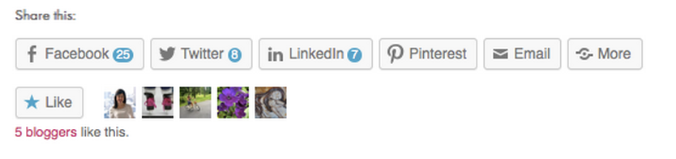

Women's iLab is an awesome startup looking to provide great content with a bent towards professional women. My team was tasked with improving the UX of the site to drive engagement, as well as looking forward to eventually incorporating personal branding and mentorship.
Our user base is everyone with an interest in women's success in the workforce.
The founders would like to see increased engagement with the site, and eventually branch out into the areas of personal branding and mentorship.
Improve interactions with the site and prompt building of a user base that will transition well with the long-term vision of the site.
Because of the short-term nature of the assignment (24 hours), we were unable to do particularly extensive user research. We considered ourselves and others working on the project to be potential users.
We determined that it would be important to increase integration of social media, as many users' primary interaction with a site. Previously, the site had been allowing only content generators to create a profile, which discouraged more casual visitors from engaging. We changed this to an all-inclusive option to increase return visits.
We made a few structural changes to the site to improve user flow through the desired steps, moving the search bar to the top, emphasizing the opportunities to join and contribute to the community, and bringing content to the forefront.
We created a space for users to build their profiles and curate their content, to engage members who would later have an interest in personal branding on the site.
Beyond accessing social media, we also suggested an "in-house" liking system, which would further encourage engagement and membership. This has since been successfully introduced on the site.
 